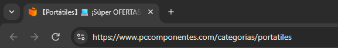
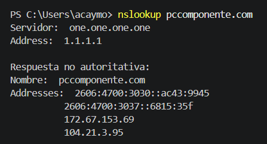
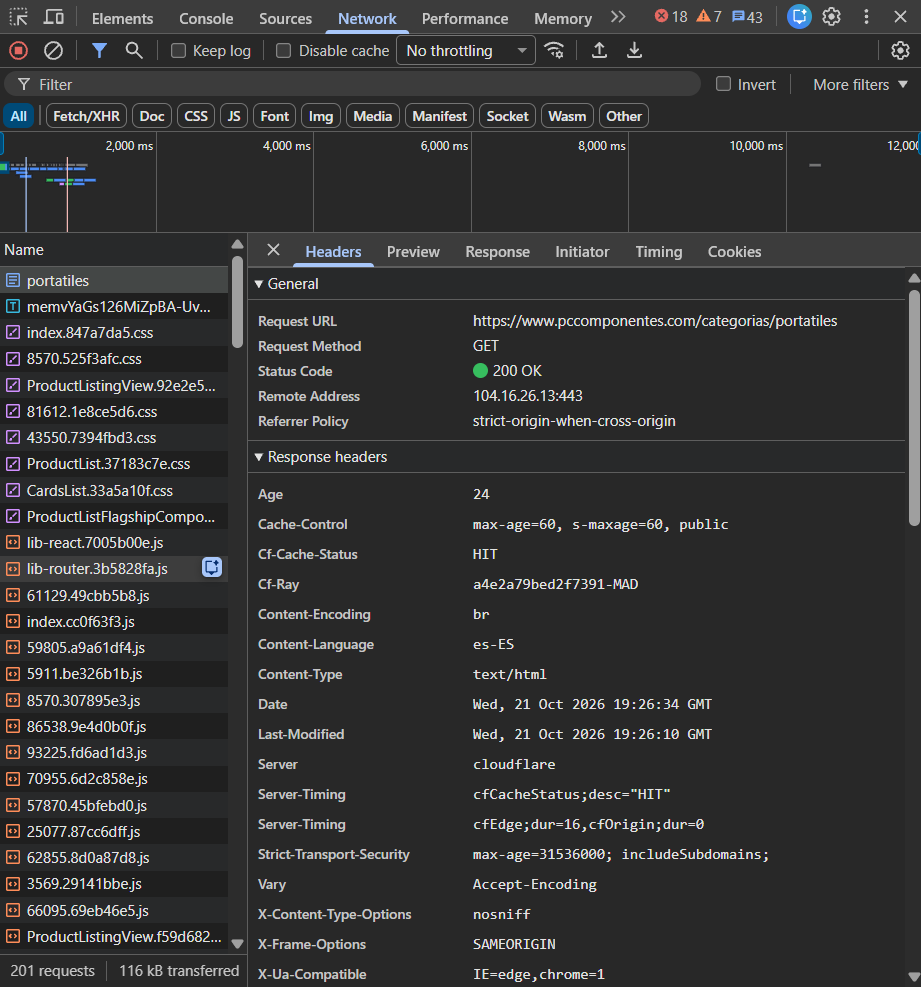
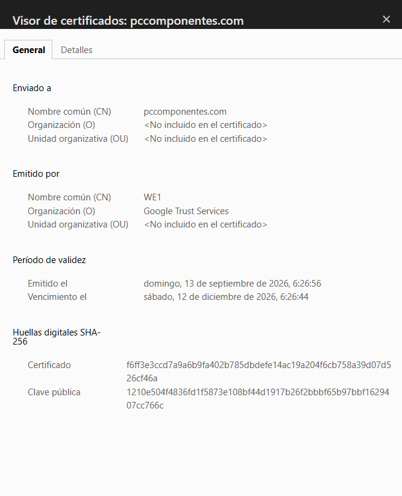
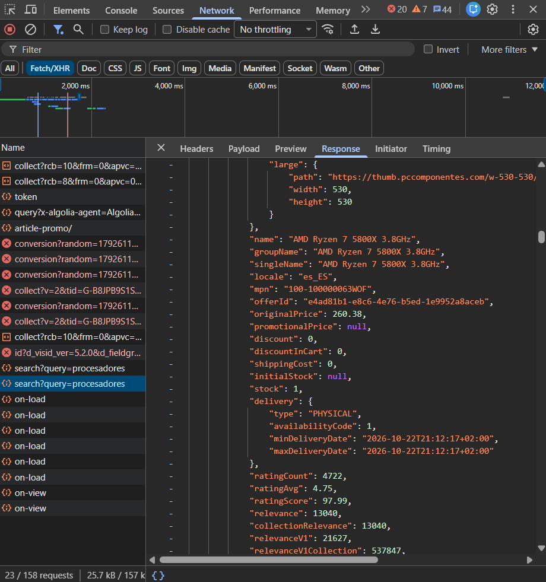

Glosario
| Término | Definición con mis palabras | Ejemplo en mi web |
|---|---|---|
| Cliente | El dispositivo o programa (como el navegador de tu móvil o PC) que pide ver una página web. | Mi navegador actúa como cliente cada vez que entro en PcComponentes a buscar algo. |
| Servidor | Un ordenador súper potente que está siempre encendido en internet guardando páginas web para enseñárselas a quien las pida. | Los ordenadores centrales de PcComponentes guardan todos los productos y responden a nuestras peticiones. |
| Servidor web | El programa que corre dentro de ese ordenador potente y se encarga de recibir lo que pedimos y devolvernos la página web. | Es el encargado de gestionar que miles de personas puedan comprar en la tienda a la vez sin que se caiga. |
| Apache | Uno de los programas de servidor web más famosos y usados del mundo para montar páginas en internet. | Puede ser el software que hay por detrás atendiendo las visitas que recibe la tienda. |
| URL | La dirección exacta que escribes arriba en el navegador para llegar a una página concreta. | La URL de la zona de portátiles es https://www.pccomponentes.com/portatiles. |
| Protocolo | Las reglas que acuerdan el navegador y el servidor para entenderse y hablar el mismo idioma. | El protocolo HTTPS marca las normas de cómo viajan los datos de forma segura entre mi PC y la tienda. |
| Dominio | El nombre fácil de recordar de una web para no tener que aprendernos números raros. | El dominio principal de la tienda es pccomponentes.com. |
| Ruta | El caminito dentro de la dirección web que te lleva a una sección o archivo específico. | En /portatiles/gaming, la ruta nos lleva directo a los portátiles para jugar. |
| Dirección IP | El número de teléfono único que tiene cada aparato conectado a internet para poder localizarlo. | El servidor de la tienda tiene asignada una IP numérica fija en la red. |
| DNS | La "agenda de contactos" de internet que traduce los nombres de las webs a números IP para que los ordenadores se entiendan. | Gracias al DNS, al escribir pccomponentes.com el navegador descubre automáticamente a qué IP debe conectarse. |
| HTTP | El sistema básico que usan el navegador y el servidor para pasarse los datos de una web, aunque sin cifrar. | Se usa al cargar cosas básicas, aunque hoy en día las webs serias te pasan enseguida a una versión más segura. |
| HTTPS | Lo mismo que el anterior, pero con un escudo protector: los datos viajan totalmente cifrados para que nadie pueda robarlos. | Toda la navegación y la zona de pagos de PcComponentes usan HTTPS para proteger nuestros datos. |
| Puerto | Una especie de "puerta" numérica por la que entra o sale un tipo de tráfico concreto en un servidor. | Las visitas seguras a la tienda entran por defecto por el puerto 443. |
| Petición | La señal que manda tu navegador al servidor pidiéndole los archivos de una página web. | Cuando escribo la dirección de la tienda, mi PC le lanza una petición al servidor para que le envíe la portada. |
| Respuesta | Lo que te devuelve el servidor después de recibir tu petición (los textos, fotos, colores, etc.). | El servidor responde mandando todo el diseño y el código necesarios para que se vea la tienda en mi pantalla. |
| Código de estado | Un código numérico de tres cifras que te manda el servidor para decirte si todo fue bien o si hubo algún fallo. | El famoso 200 OK nos confirma que la página ha cargado perfectamente. |
| Web estática | Una página sencilla cuyos archivos están fijos y se muestran exactamente igual a todo el mundo, sin cambiar nada. | Las secciones de avisos legales o condiciones de compra suelen ser webs estáticas. |
| Web dinámica | Una página "viva" que cambia su contenido en función de lo que busques o de quién seas, usando bases de datos. | La portada y el buscador de la tienda son dinámicos porque cambian de precio y stock todo el tiempo. |
| PHP | Un lenguaje de programación que trabaja oculto en el servidor para hacer funcionar las páginas dinámicas. | Ayuda a procesar las cuentas de usuario, el carrito de la compra y las consultas internas de la tienda. |
| Base de datos | Un archivador digital gigante y súper organizado donde se guarda toda la información importante. | Ahí se guardan los precios, las descripciones de los componentes, las fotos y las cuentas de los clientes. |
| LAMP | Un pack clásico de herramientas gratuitas de código abierto que se junta para montar servidores web. | Es la base tecnológica tradicional sobre la que se construyen muchos sitios de comercio electrónico. |
| JSON | Un formato de texto muy limpio y ordenado que se usa para pasar datos de un lado a otro en internet. | Se usa para que el buscador de la tienda te muestre sugerencias al instante sin tener que recargar toda la página. |
| XML | Un lenguaje basado en etiquetas para ordenar y transportar datos, parecido al HTML pero enfocado a la información. | Se suele utilizar en archivos como el mapa del sitio (sitemap) para que Google indexe bien las páginas de la tienda. |
Evidencias




